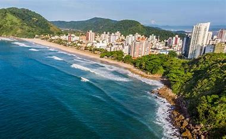

MAIS INFORMAÇÕES SOBRE A PRAIA:
Localização: Guarujá, estado de São Paulo, Brasil.A praia se estende por aproximadamente 5,6 km e está situada entre a Praia da Pitangueiras e a Praia do Éden.
Descrição Detalhada da Praia da Enseada
A Praia da Enseada é uma das mais populares e extensas praias do Guarujá. Ela é conhecida por sua infraestrutura completa e por atrair tanto turistas quanto moradores locais.
Características Principais:
- Extensão e Areia: Com 5,6 km de extensão, a praia possui uma longa faixa de areia branca e fina.
- Águas: O mar é geralmente agitado, com ondas que atraem surfistas, mas também há áreas mais calmas, especialmente no canto esquerdo conhecido como “Canto Tortugas”, ideal para famílias com crianças.
- Infraestrutura: A praia é bem equipada com quiosques, bares, restaurantes, hotéis e pousadas ao longo de sua orla. Além disso, há uma ciclovia e um calçadão que são perfeitos para caminhadas e passeios de bicicleta.
- Atrações: Um dos destaques é o Acqua Mundo, um grande aquário que abriga mais de 170 espécies de peixes, répteis, aves e invertebrados. Durante o verão, a praia também recebe shows, eventos e parques de diversão.
Atividades:
- Esportes Aquáticos: A praia oferece locação de pranchas de stand-up paddle, jet skis e bicicletas.
- Lazer Noturno: Há uma variedade de bares e restaurantes que proporcionam uma vida noturna animada.
- Mirantes: O Mirante da Campina oferece uma vista panorâmica deslumbrante da praia.